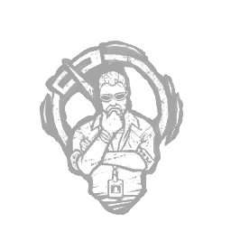

纠错行动 Corrective Action
所属：乔纳·瓦斯奎兹（逃生者）
| 等级 | 档位 1 | 档位 2 | 档位 3 |
|---|---|---|---|
| 数值 | 1 6 | 2 | 3 |
描述
你能够快速分析问题，并在他人犯错时纠正他们的工作。你以1/2/3枚代币开始对局，成功完成完美技能检验可获得+1枚代币，最多5枚代币。当任何其他逃生者进行可触发技能检验的技巧性互动时，将任何失败技能检验转化为良好技能检验。这会消耗1枚代币。该逃生者的气场会显示6秒。纠正行动不适用于特殊技能检验。“多一双眼睛来检查问题总没有坏处。” ——乔纳·瓦斯奎兹